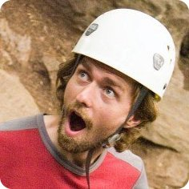

Community
Experiential Education
 I believe in experiential education and fostering an appreciation for the natural world in and outside of the classroom. I help organize and lead wilderness trips for disadvantaged children in Sacramento through Inner City Outings. I also guide rock climbing, snow camping, and backpacking trips for college students and the general public through Davis Outdoor Adventures and Shasta Mountain Guides. I was introduced to outdoor leadership and education through Princeton’s orientation program, Outdoor Action, where I lead trips and trained leaders in both technical skills and group dynamics (see my Outdoor Guide C.V.). See my Teaching page for more on my teaching inside the classroom.
Intentional Communities
I am interested in sustainable and cooperative living. From 2008-2012 I served on the board of directors of the nonprofit Solar Community Housing Association (SCHA), which is dedicated to encouraging and creating community and respect for environment through affordable, cooperative housing. In that time we expanded from 16 to 50 members, oversaw the renovation of two historic houses into LEED certified cooperatives in an effort that involved over 200 volunteers over two years and $500,000, and in the following year we took over management of the on campus Domes cooperative through an agreement with UC Davis, performing the estimated $1 million in renovations through a community build involving nearly 500 volunteers over 4 days and a $30,000 fundraising campaign. While overseeing these projects as a member of the board, I have also served as treasurer, webmaster, and a community mediator, and both attended and run workshops on conflict resolution and meeting facilitation.
Open Science and Scientific Computing
I believe more open science makes large-scale, collaborative efforts possible, increases the chances that results are reproducible and improves the access of educators, policy-makers and taxpayers to the products of publicly funded research. I am a founding member of the Davis Open Science group, which promotes awareness, tools, and community around open science issues. I strive to make my research process transparent and reproducible through the practice of Open Notebook Science I am particularly interested in the role of technology in hampering or facilitating these goals. In this spirit, I am a founding member of the rOpenSci Project, a software developer collective with the goals of providing tools and building community to promote open science by providing programmatic access to scientific databases.